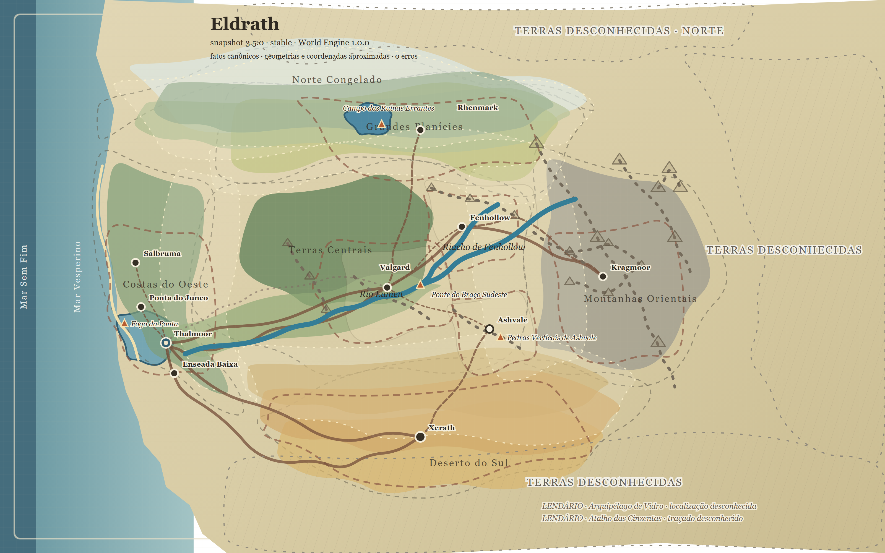

Interpretação artística · v001
Carta ilustrada de Eldrath
Pintura cartográfica derivada do mapa aprovado. Destina-se à contemplação e à ambientação; rótulos e consultas exatas permanecem no mapa interativo.
Abrir em tamanho completoValgard Maps · versão oficial 1.21.0 · snapshot 3.5.0
Interpretações visuais das Terras Conhecidas. A posição dos elementos segue o mapa técnico; relevo pintado, texturas, cores e acabamento são reconstruções artísticas.
O mapa interativo e o modelo estruturado continuam sendo a referência técnica. Nenhuma costa, fronteira ou altitude nova é confirmada por estas imagens. As Terras Desconhecidas ao norte, a leste e ao sul permanecem abertas.
Interpretação artística · v001
Pintura cartográfica derivada do mapa aprovado. Destina-se à contemplação e à ambientação; rótulos e consultas exatas permanecem no mapa interativo.
Abrir em tamanho completo
Referência cartográfica · snapshot 3.5.0
Versão reproduzível com nomes, assentamentos, hidrografia, rotas, gradientes climáticos e áreas desconhecidas. Use-a para conferir a posição relativa de cada elemento.
Abrir em alta resolução{kind=link}